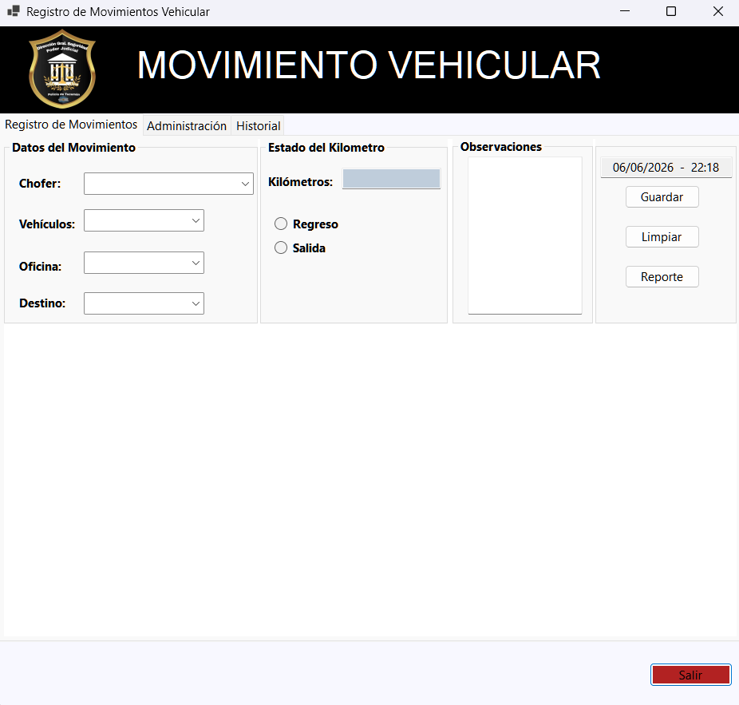
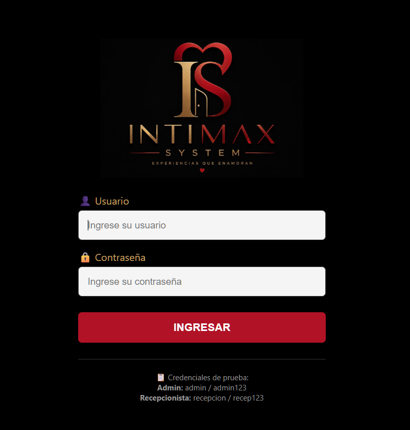

Conocimientos y Tecnologías
A lo largo de mi formación y proyectos personales, vengo consolidando el manejo de las siguientes tecnologías para resolver problemas reales de lógica y gestión:
Lenguajes y Backend
- C# / .NET (Desarrollo de escritorio y lógica de negocio)
- HTML5 / CSS3 (Estructura y diseño de interfaces web)
Bases de Datos y Entornos
- MySQL Workbench (Diseño relacional, consultas y auditoría)
- Microsoft Access / VBA (Automatización y sistemas de gestión rápidos)

Desarrollo de un sistema de control de flotas y movimientos diarios para la Guardia Policial del Poder Judicial. Implementado en C# con una arquitectura de base de datos relacional en MySQL Workbench para garantizar la integridad y auditoría de los datos.

Interfaz web para la administración y reserva de turnos del hotel "IntimaX". Desarrollado con HTML y CSS, enfocado en ofrecer una experiencia de usuario fluida, limpia y un diseño adaptable para facilitar la gestión del personal.